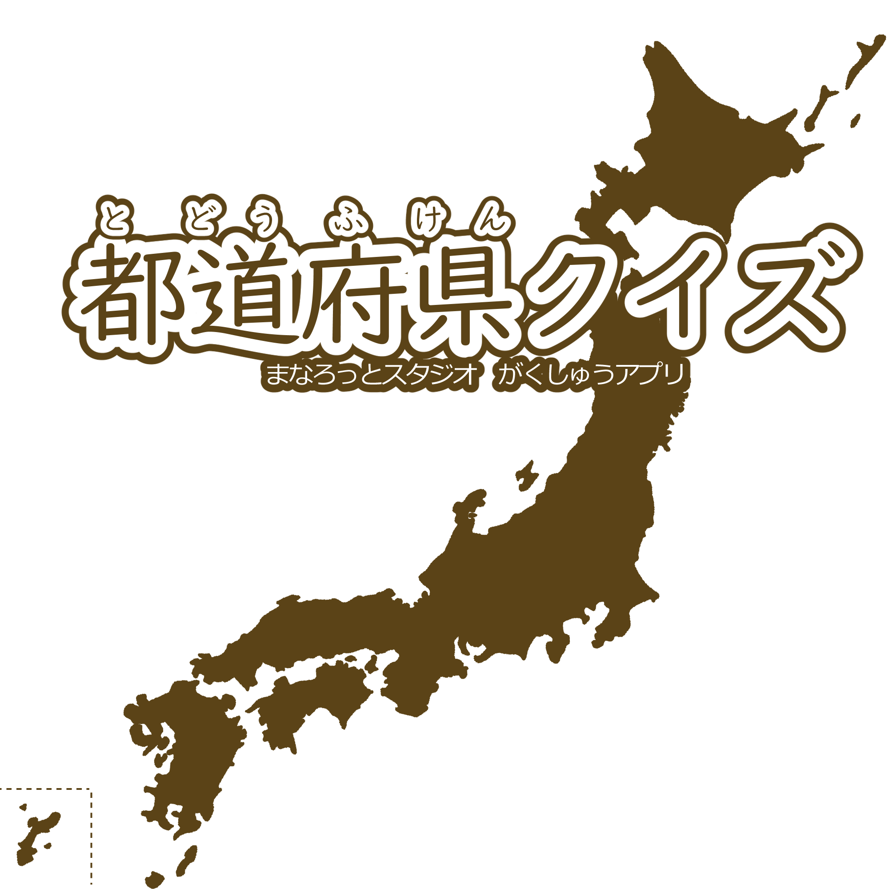
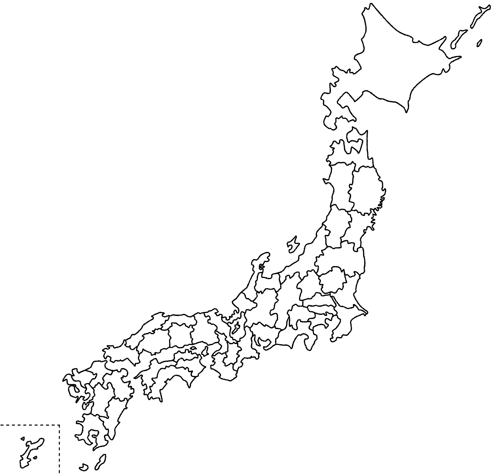

<!DOCTYPE html>
<html lang="ja">
<head>
  <meta charset="UTF-8">
  <meta name="viewport" content="width=device-width, initial-scale=1.0">
  <title>都道府県クイズ</title>
  <style>
    html, body {
      height: 100%;
      margin: 0;
      background-color: #f0f8ff;
      display: flex;
      justify-content: center;
      align-items: center;
      font-family: "Arial", sans-serif;
    }

#game-container {
  position: relative;
  width: 90vw;
  height: 87vh;
  margin: auto;
  border-radius: 20px;
  overflow: hidden;
  background-color: #fff;
  box-shadow: 0 0 10px rgba(0,0,0,0.2);
  font-size: 28px;

  /* メインコンテンツの中央寄せ設定 */
  display: flex;
  flex-direction: column;
  align-items: center;        /* 左右中央に揃える */
  justify-content: flex-start; /* 上寄せ。必要に応じてcenterにしてもOK */
  padding: 20px;              /* 中央のUIと端の絶対配置が干渉しないよう余白 */
}
    #title-image {
      height: 100%;
      object-fit: cover;
      display: block;
      margin: 0 auto;
    }

    .menu-buttons {
      position: absolute;
      top: 50%;
      left: 50%;
      transform: translateX(-50%);
      display: flex;
      flex-direction: column;
      gap: 14px;
      z-index: 10;
    }

.menu-buttons button {
  padding: 10px 24px;
  font-size: 20px;
  font-weight: bold;                       /* 文字を太く */
  border: 3px solid #e86c00;               /* 濃いオレンジの太枠 */
  border-radius: 10px;
  background-color: #ffffff;               /* 白背景 */
  color: #e86c00;                          /* 文字色もオレンジ */
  cursor: pointer;
  transition: all 0.3s;
  box-shadow: 3px 3px 8px rgba(0,0,0,0.2);  /* しっかりした影 */
}

.menu-buttons button:hover {
  background-color: #fff1e0;               /* ホバー時のほんのり色付き */
  box-shadow: 4px 4px 10px rgba(0,0,0,0.3); /* ホバー時に影を強調 */
}

#back-button {
  position: absolute;
  top: 10px;
  right: 10px;
  z-index: 10;
  padding: 10px 10px;
  background-color: #666;
  color: white;
  border: none;
  border-radius: 8px;
  font-size: 16px;
}

ruby {
  font-size: 28px; /* 漢字のサイズ */
}

rt {
  font-size: 14px; /* ふりがなのサイズ */
  color: #555;
}

#mode-banner {
  position: absolute;
  top: 10px;
  left: 10px;
  padding: 8px 16px;
  background-color: #e86c00;
  color: white;
  font-size: 16px;
  font-weight: bold;
  border-radius: 8px;
  z-index: 20;
  box-shadow: 2px 2px 6px rgba(0, 0, 0, 0.3);
}

input[type="radio"] {
  transform: scale(1.8);
  margin-right: 10px;     /* ラベルとの間に余白 */
}

#japan-map {
  position: absolute;
  top: 0;
  left: 50%;                      /* 画面の幅の中央を基準に */
  transform: translateX(-50%);    /* 画像の幅の半分だけ左にずらす */
  height: 100%;
  z-index: 5;
}

#highlight-pref {
  position: absolute;
  top: 0;
  left: 50%;                      /* 画面の幅の中央を基準に */
  transform: translateX(-50%);    /* 画像の幅の半分だけ左にずらす */
  height: 100%;
  z-index: 1;
}

#question-text {
  position: absolute;
  top: 100px;
  left: 20px;
  font-size: 28px;
  font-weight: bold;
  background-color: rgba(255, 255, 255, 0.8);
  padding: 8px 16px;
  border-radius: 8px;
  z-index: 10;
}

#choice-buttons {
  position: absolute;
  bottom: 70px;
  right: 20px;
  display: flex;
  flex-direction: column;
  gap: 12px;
  z-index: 15;
}

#choice-buttons button {
  font-size: 20px;
  padding: 10px 20px;
  border: 2px solid #e86c00;
  border-radius: 8px;
  width: 200px;
  background-color: white;
  color: #e86c00;
  font-weight: bold;
  cursor: pointer;
}

#next-button-area {
  position: absolute;
  bottom: 15px;
  right: 20px;
  z-index: 20;
}

#next-button {
  padding: 8px 15px;
  font-size: 18px;
  font-weight: bold;
  background-color: #e86c00;
  color: white;
  border: none;
  border-radius: 8px;
  cursor: pointer;
  box-shadow: 2px 2px 5px rgba(0, 0, 0, 0.3);
}

.choice-wrapper {
  display: flex;
  align-items: center;
  gap: 10px; /* マークとボタンの間隔 */
}

.result-mark {
  font-size: 32px;
  font-weight: bold;
  color: #333;
  width: 35px;
  text-align: center;
}

#result-message {
  text-align: center;
  font-size: 24px;
  font-weight: bold;
}

.result-title {
  font-size: 28px;
  margin-bottom: 20px;
  color: #e86c00;
}

#score-display {
  font-size: 60px;
  font-weight: bold;
  color: #333;
  margin: 20px 0;
}

#score-number {
  font-size: 60px;
}

.score-unit {
  font-size: 28px;
  margin-left: 8px;
  color: #444;
}

#result-comment {
  font-size: 22px;
  color: #555;
  margin-top: 20px;
  min-height: 2em;
}

#restart-button {
  display: block;
  margin: 50px auto 0;
  padding: 12px 24px;
  font-size: 18px;
  background-color: #888;
  color: white;
  border: none;
  border-radius: 8px;
  cursor: pointer;
}

#result-wrapper {
  border: 4px solid orange;
  border-radius: 20px;
  padding: 30px;
  width: 400px;
  height: 450px;
  margin: 60px auto;
  background-color: #fff8f0;
  box-shadow: 0 4px 12px rgba(0, 0, 0, 0.1);
  text-align: center;
}

  </style>
</head>
<body>
  <div id="game-container">
  </div>
  <canvas id="confetti-canvas" style="position:fixed; top:0; left:0; pointer-events:none; z-index:999;"></canvas>

<script>

const prefectures = [
  { id: 1, name: "北海道", yomi: "ほっかいどう" },
  { id: 2, name: "青森県", yomi: "あおもりけん" },
  { id: 3, name: "秋田県", yomi: "あきたけん" },
  { id: 4, name: "岩手県", yomi: "いわてけん" },
  { id: 5, name: "山形県", yomi: "やまがたけん" },
  { id: 6, name: "宮城県", yomi: "みやぎけん" },
  { id: 7, name: "新潟県", yomi: "にいがたけん" },
  { id: 8, name: "福島県", yomi: "ふくしまけん" },
  { id: 9, name: "栃木県", yomi: "とちぎけん" },
  { id: 10, name: "茨城県", yomi: "いばらきけん" },
  { id: 11, name: "群馬県", yomi: "ぐんまけん" },
  { id: 12, name: "埼玉県", yomi: "さいたまけん" },
  { id: 13, name: "千葉県", yomi: "ちばけん" },
  { id: 14, name: "東京都", yomi: "とうきょうと" },
  { id: 15, name: "神奈川県", yomi: "かながわけん" },
  { id: 16, name: "山梨県", yomi: "やまなしけん" },
  { id: 17, name: "静岡県", yomi: "しずおかけん" },
  { id: 18, name: "長野県", yomi: "ながのけん" },
  { id: 19, name: "富山県", yomi: "とやまけん" },
  { id: 20, name: "岐阜県", yomi: "ぎふけん" },
  { id: 21, name: "愛知県", yomi: "あいちけん" },
  { id: 22, name: "石川県", yomi: "いしかわけん" },
  { id: 23, name: "福井県", yomi: "ふくいけん" },
  { id: 24, name: "滋賀県", yomi: "しがけん" },
  { id: 25, name: "三重県", yomi: "みえけん" },
  { id: 26, name: "京都府", yomi: "きょうとふ" },
  { id: 27, name: "奈良県", yomi: "ならけん" },
  { id: 28, name: "和歌山県", yomi: "わかやまけん" },
  { id: 29, name: "大阪府", yomi: "おおさかふ" },
  { id: 30, name: "兵庫県", yomi: "ひょうごけん" },
  { id: 31, name: "岡山県", yomi: "おかやまけん" },
  { id: 32, name: "鳥取県", yomi: "とっとりけん" },
  { id: 33, name: "島根県", yomi: "しまねけん" },
  { id: 34, name: "広島県", yomi: "ひろしまけん" },
  { id: 35, name: "山口県", yomi: "やまぐちけん" },
  { id: 36, name: "香川県", yomi: "かがわけん" },
  { id: 37, name: "徳島県", yomi: "とくしまけん" },
  { id: 38, name: "高知県", yomi: "こうちけん" },
  { id: 39, name: "愛媛県", yomi: "えひめけん" },
  { id: 40, name: "福岡県", yomi: "ふくおかけん" },
  { id: 41, name: "大分県", yomi: "おおいたけん" },
  { id: 42, name: "佐賀県", yomi: "さがけん" },
  { id: 43, name: "長崎県", yomi: "ながさきけん" },
  { id: 44, name: "熊本県", yomi: "くまもとけん" },
  { id: 45, name: "宮崎県", yomi: "みやざきけん" },
  { id: 46, name: "鹿児島県", yomi: "かごしまけん" },
  { id: 47, name: "沖縄県", yomi: "おきなわけん" }
];

  let questionCount = 0; //問題数
  let quizMode = ""; //選択モード
  let questionList = []; //生成された問題リスト
  let correctCount = 0; //正解数

  window.addEventListener("DOMContentLoaded", () => {
    showTitleScreen();
  });

  function showTitleScreen() {
    questionCount = 0;
    quizMode = "";
    questionList = [];
    correctCount = 0;
    const container = document.getElementById("game-container");

    container.innerHTML = `
      
      <div class="menu-buttons">
        <button onclick="selectQuestionCount('lower')">１～３ねんせい　とどうふけんのなまえ</button>
        <button onclick="selectQuestionCount('upper')">４年生以上　都道府県の名前</button>
        <button onclick="selectQuestionCount('map')"><ruby style="font-size: 20px; font-weight: bold; color: #e86c00;">全学年<rt style="font-size: 12px; color: #e86c00;">ぜんがくねん</rt></ruby>　<ruby style="font-size: 20px; font-weight: bold; color: #e86c00;">都道府県<rt style="font-size: 12px; color: #e86c00;">とどうふけん</rt></ruby>の<ruby style="font-size: 20px; font-weight: bold; color: #e86c00;">場所<rt style="font-size: 12px; color: #e86c00;">ばしょ</rt></ruby></button>
      </div>
    `;
  }

  function selectQuestionCount(mode) {
    quizMode = mode;
    const container = document.getElementById("game-container");
    const modeLabel = {
        lower: "とどうふけん　なまえクイズ",
        upper: "都道府県　名前クイズ",
        map: "都道府県　場所クイズ"
    };

    container.innerHTML = `
    <div id="mode-banner">${modeLabel[mode]}</div>
    <button id="back-button" onclick="showTitleScreen()">もどる</button>
      <div style="padding: 30px; font-size: 28px;">
        <h2 style="font-size: 28px;"><ruby>問題<rt>もんだい</rt></ruby>の<ruby>数<rt>かず</rt></ruby>をえらんでね</h2>
        <label><input type="radio" name="qcount" value="5" checked> ５<ruby>問<rt>もん</rt></ruby></label><br>
        <label><input type="radio" name="qcount" value="10"> １０<ruby>問<rt>もん</rt></ruby></label><br>
        <label><input type="radio" name="qcount" value="20"> ２０<ruby>問<rt>もん</rt></ruby></label><br>
        <label><input type="radio" name="qcount" value="47"> ４７<ruby>問<rt>もん</rt></ruby>（ぜんぶ）</label><br><br>

        <button onclick="startQuizWithMode('${mode}')" style="
          margin-top: 30px;
          padding: 12px 24px;
          font-size: 24px;
          font-weight: bold;
          border: 3px solid #e86c00;
          border-radius: 10px;
          background-color: #ffffff;
          color: #e86c00;
          cursor: pointer;
          box-shadow: 3px 3px 8px rgba(0,0,0,0.2);
        ">クイズスタート！</button>
      </div>
    `;
  }

function startQuizWithMode(mode) {
  const selected = document.querySelector('input[name="qcount"]:checked');
  questionCount = parseInt(selected.value, 10);

  questionList = shuffle([...prefectures]).slice(0, questionCount);
  correctCount = 0;

  // モードに応じてクイズ開始
  if (mode === "lower") {
    startLowerGradeQuiz();
  } else if (mode === "upper") {
    startUpperGradeQuiz();
  } else if (mode === "map") {
    startMapGame();
  }
}

// 配列をシャッフルする関数（Fisher-Yates）
function shuffle(array) {
  const result = [...array];
  for (let i = result.length - 1; i > 0; i--) {
    const j = Math.floor(Math.random() * (i + 1));
    [result[i], result[j]] = [result[j], result[i]];
  }
  return result;
}

function startLowerGradeQuiz() {
  const container = document.getElementById("game-container");
  const currentPref = questionList[0]; // 出題中の都道府県

  const modeLabel = {
    lower: "とどうふけん　なまえクイズ",
    upper: "都道府県　名前クイズ",
    map: "都道府県　場所クイズ"
  };

  // 正解 + ダミー3つを選択肢として用意
  const choices = [currentPref];
  const others = shuffle(prefectures.filter(p => p.id !== currentPref.id)).slice(0, 3);
  choices.push(...others);

  const shuffledChoices = shuffle(choices);

  // innerHTML 出力（選択肢ボタン生成）
  container.innerHTML = `
    <div id="mode-banner">${modeLabel[quizMode]}</div>
    <button id="back-button" onclick="showTitleScreen()">もどる</button>

    
    

    <div id="question-text">この　<ruby>都道府県<rt>とどうふけん</rt></ruby>の<br><ruby>名前<rt>なまえ</rt></ruby>は？</div>

<div id="choice-buttons">
  ${shuffledChoices.map(pref => `
    <div class="choice-wrapper">
      <div class="result-mark"></div> <!-- 先に表示 -->
      <button onclick="checkAnswer(${pref.id}, this)">
        <ruby>${pref.name}<rt>${pref.yomi}</rt></ruby>
      </button>
    </div>
  `).join('')}
</div>

    <div id="next-button-area"></div>
  `;
}

function checkAnswer(selectedId, clickedButton) {
  const correctId = questionList[0].id;
  const wrappers = document.querySelectorAll('.choice-wrapper');

  wrappers.forEach(wrapper => {
    const btn = wrapper.querySelector('button');
    const mark = wrapper.querySelector('.result-mark');
    const isCorrect = btn.innerText.includes(prefectures.find(p => p.id === correctId).name);

    if (isCorrect) {
      btn.style.backgroundColor = "#c8f7c5";
      btn.style.borderColor = "green";
      mark.textContent = "⭕";
    } else if (btn === clickedButton) {
      btn.style.backgroundColor = "#f8cccc";
      btn.style.borderColor = "red";
      mark.textContent = "❌";
    }

    btn.disabled = true;
  });

  if (selectedId === correctId) {
    correctCount++;
  }

  // つぎへボタン表示
  document.getElementById("next-button-area").innerHTML = `
    <button id="next-button" onclick="nextQuestion()">つぎへ →</button>
  `;
}

function nextQuestion() {
  // 今の問題をリストから削除
  questionList.shift();

  if (questionList.length === 0) {
    // 成績発表（仮）
    showResultScreen();
  } else {
    // 次の問題を表示
    startLowerGradeQuiz();
  }
}

function showResultScreen() {
  const modeLabel = {
    lower: "とどうふけん　なまえクイズ",
    upper: "都道府県　名前クイズ",
    map: "都道府県　場所クイズ"
  };
  const container = document.getElementById("game-container");

  // リザルト画面の初期表示（タイトルとスロット数字用エリア）
  container.innerHTML = `
  <div id="mode-banner">${modeLabel[quizMode]}</div>
  <div id="result-wrapper">
    <div id="result-message">
      <div class="result-title">あなたの成績</div>
      <div id="score-display"><span id="score-number">000</span> <span class="score-unit">てん</span></div>
      <div id="result-comment"></div>
    </div>
    <button id="restart-button" onclick="showTitleScreen()">さいしょにもどる</button>
  </div>
  `;

  // スロット風数字表示
  const scoreElement = document.getElementById("score-number");
  const finalScore = Math.floor((correctCount / questionCount) * 100);
  let current = 0;
  const duration = 1000;
  const steps = 30;
  const interval = duration / steps;
  const increment = Math.ceil(finalScore / steps);

  const slotInterval = setInterval(() => {
    current += increment;
    if (current >= finalScore) {
      current = finalScore;
      clearInterval(slotInterval);

      // コメント表示
      const comment = getCommentForScore(finalScore);
      document.getElementById("result-comment").textContent = comment;
      if (finalScore === 100) {
        launchConfetti();
      }
    }
    scoreElement.textContent = current.toString().padStart(3, "0");
  }, interval);

}

// スコアに応じたコメント
function getCommentForScore(score) {
  if (score < 50) {
    return "次は　もっと高得点をめざそう！";
  } else if (score <= 80) {
    return "この調子で　がんばろう！";
  } else if (score < 100) {
    return "おしい！　もうちょっとで満点だ！";
  } else {
    return "おめでとう！全問正解だよ！";
  }
}

function launchConfetti() {
  const canvas = document.getElementById('confetti-canvas');
  const ctx = canvas.getContext('2d');

  canvas.width = window.innerWidth;
  canvas.height = window.innerHeight;

  const confettiCount = 150;
  const confetti = [];

  for (let i = 0; i < confettiCount; i++) {
    confetti.push({
      x: Math.random() * canvas.width,
      y: Math.random() * canvas.height - canvas.height,
      r: Math.random() * 6 + 4,
      d: Math.random() * confettiCount,
      color: `hsl(${Math.random() * 360}, 70%, 60%)`,
      tilt: Math.random() * 10 - 10,
      tiltAngleIncremental: Math.random() * 0.07 + 0.05,
      tiltAngle: 0
    });
  }

  function draw() {
    ctx.clearRect(0, 0, canvas.width, canvas.height);
    confetti.forEach((c, i) => {
      ctx.beginPath();
      ctx.lineWidth = c.r;
      ctx.strokeStyle = c.color;
      ctx.moveTo(c.x + c.tilt + c.r / 2, c.y);
      ctx.lineTo(c.x + c.tilt, c.y + c.tilt + c.r / 2);
      ctx.stroke();
    });
    update();
  }

  function update() {
    confetti.forEach((c, i) => {
      c.tiltAngle += c.tiltAngleIncremental;
      c.y += (Math.cos(c.d) + 3 + c.r / 2) / 2;
      c.x += Math.sin(0);
      c.tilt = Math.sin(c.tiltAngle - i) * 15;
    });
  }

  let animationId;
  function loop() {
    draw();
    animationId = requestAnimationFrame(loop);
  }

  loop();

  setTimeout(() => {
    cancelAnimationFrame(animationId);
    ctx.clearRect(0, 0, canvas.width, canvas.height);
  }, 3000);
}

  function startUpperGradeQuiz() {
    document.getElementById("game-container").innerHTML =
      `<h2 style="text-align: center; padding-top: 40%;">４年生以上クイズ（${questionCount}もん）スタート！</h2>`;
  }

  function startMapGame() {
    document.getElementById("game-container").innerHTML =
      `<h2 style="text-align: center; padding-top: 40%;">地図モード（${questionCount}もん）スタート！</h2>`;
  }
</script>

</body>
</html>
